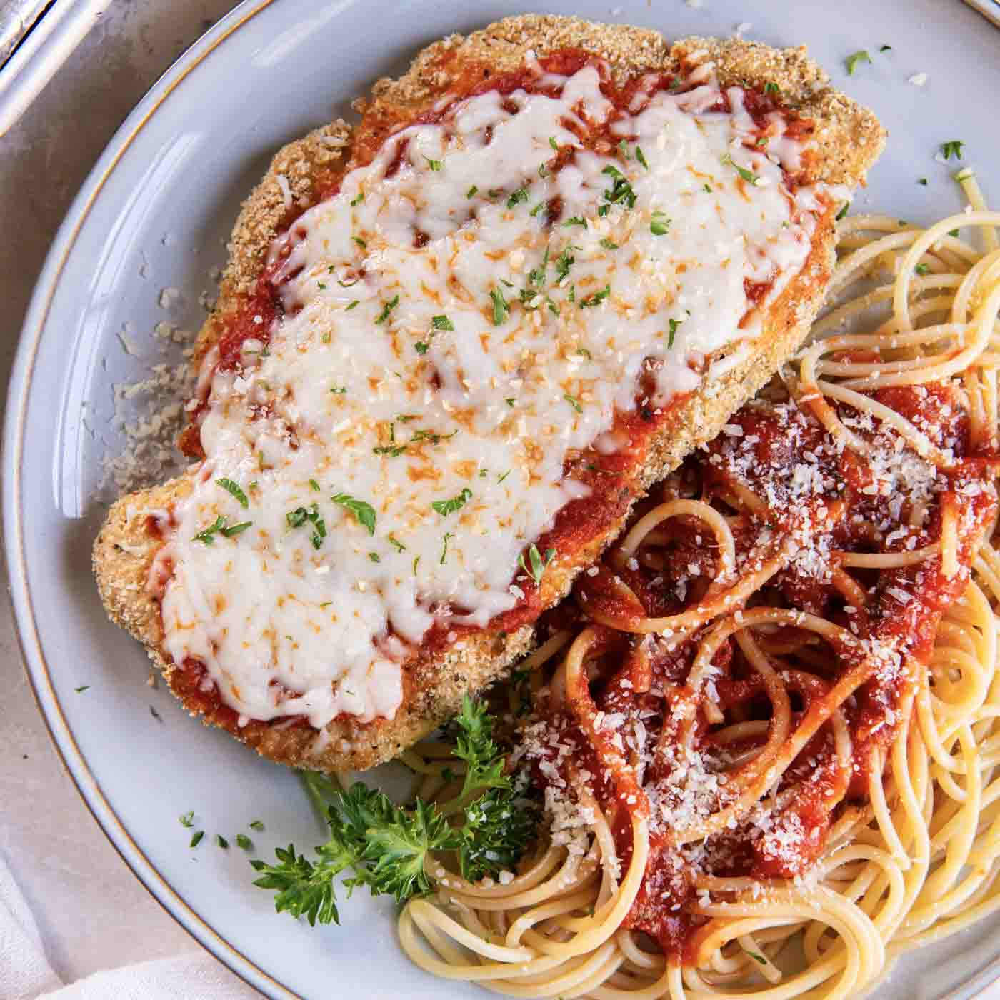

Chicken Parm

Description
Chicken Parmesan, often called "Chicken Parm," is a classic Italian-American dish. It consists of breaded chicken breast, pan-fried or baked, and topped with marinara sauce and melted cheese, usually mozzarella and sometimes Parmesan. The chicken cutlet is first seasoned, dredged in flour, dipped in beaten eggs, and then coated in breadcrumbs, often with Italian herbs like basil and oregano for extra flavor. After cooking, it's topped with marinara sauce and cheese, then baked or broiled until the cheese is bubbly and golden.
Chicken Parmesan is typically served over spaghetti or another type of pasta and garnished with fresh basil or parsley. It’s a comforting, flavorful dish combining the crispiness of the breaded chicken with the tangy tomato sauce and creamy, melted cheese for a savory and satisfying meal.
Ingredients
- For the Chicken:
- 4 boneless, skinless chicken breasts (pounded to an even thickness)
- Salt and pepper (for seasoning)
- 1 cup all-purpose flour (for dredging)
- 2 large eggs (beaten)
- 1 cup breadcrumbs (Italian-style or plain, with optional Italian seasoning)
- ½ cup grated Parmesan cheese
- 2-3 tablespoons olive oil (for frying)
- For the Sauce:
- 2 cups marinara sauce (homemade or store-bought)
- 1-2 cloves garlic (minced, optional for added flavor)
- 1 teaspoon dried basil (optional)
- 1 teaspoon dried oregano (optional)
- For Topping:
- 1 cup shredded mozzarella cheese
- ¼ cup grated Parmesan cheese
- Fresh basil or parsley (for garnish)
- Optional for Serving:
- Cooked pasta (like spaghetti or fettuccine)
- Extra marinara sauce (for serving with pasta)
Steps
- Step 1: Prepare the Chicken
- Pound the chicken breasts to an even thickness (about ½ inch) using a meat mallet or rolling pin.
- Season with salt and pepper on both sides.
- Step 2: Set Up Dredging Stations
- Place the flour in one shallow dish.
- Place the beaten eggs in a second shallow dish.
- In a third dish, combine the breadcrumbs with ½ cup grated Parmesan cheese.
- Step 3: Bread the Chicken
- Dredge each chicken breast in flour, shaking off any excess.
- Dip the floured chicken in the beaten eggs to coat.
- Press the chicken into the breadcrumb mixture, ensuring it's fully coated. Set aside on a plate.
- Step 4: Cook the Chicken
- Heat 2-3 tablespoons of olive oil in a large skillet over medium heat.
- Cook the breaded chicken breasts for about 3-4 minutes per side, until golden brown and cooked through. Remove from skillet and place on a paper towel-lined plate.
- Step 5: Preheat Oven and Prepare the Sauce
- Preheat your oven to 400°F (200°C).
- (Optional): To add more flavor to store-bought marinara, sauté minced garlic in a bit of olive oil, then stir in the marinara sauce, basil, and oregano. Simmer for 5 minutes.
- Step 6: Assemble the Chicken Parmesan
- Spread a thin layer of marinara sauce in a baking dish.
- Place the cooked chicken breasts in the dish.
- Spoon additional marinara sauce over each chicken breast.
- Top each piece with a generous amount of mozzarella cheese and a sprinkle of Parmesan cheese.
- Step 7: Bake
- Bake the Chicken Parmesan in the preheated oven for 10-15 minutes, or until the cheese is melted, bubbly, and lightly golden.
- Step 8: Serve
- Garnish with fresh basil or parsley.
- Serve hot with pasta and additional marinara sauce if desired.